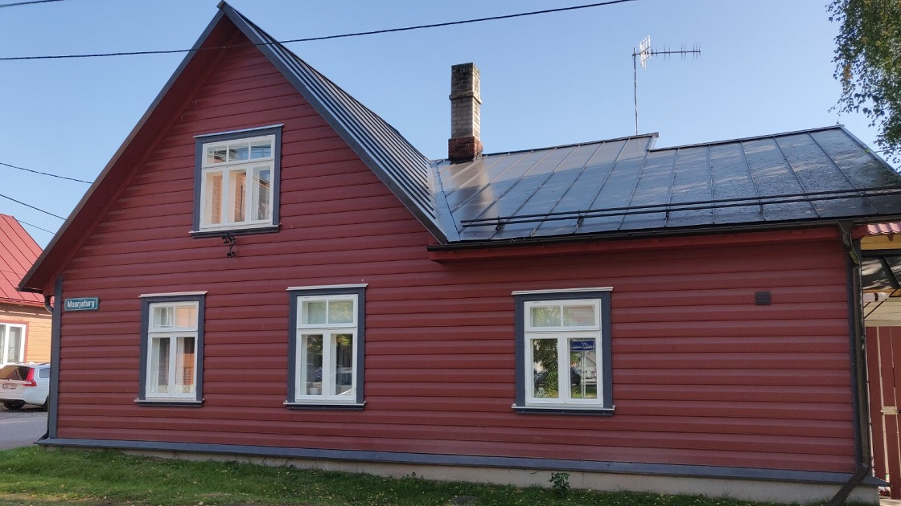

Kõuts OÜ on väike pereettevõte, kelle pakutavad teenused ulatuvad üldehitusest kuni raamatupidamiseni. Ehitusalane kogemus on meil juba üle 20 aasta. Arvutite hooldus ja raamatupidamine on lisandunud viimase 7 aasta jooksul.
Meie moto:
Teeme s*tast saia!

Pakutavad teenused
- Üldehitus
- Avarii tööd
- Arvutite hooldus
- Raamatupidamine
- Kinnisvara üürimine
- Ehituskonsultatsioon
- Fianatskonsultatsioonid